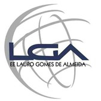
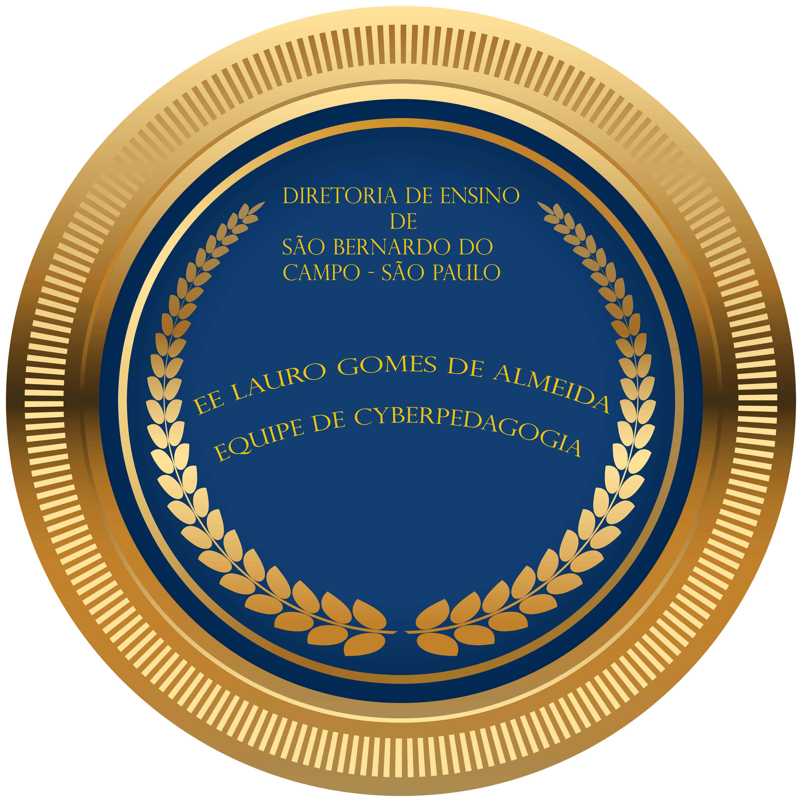
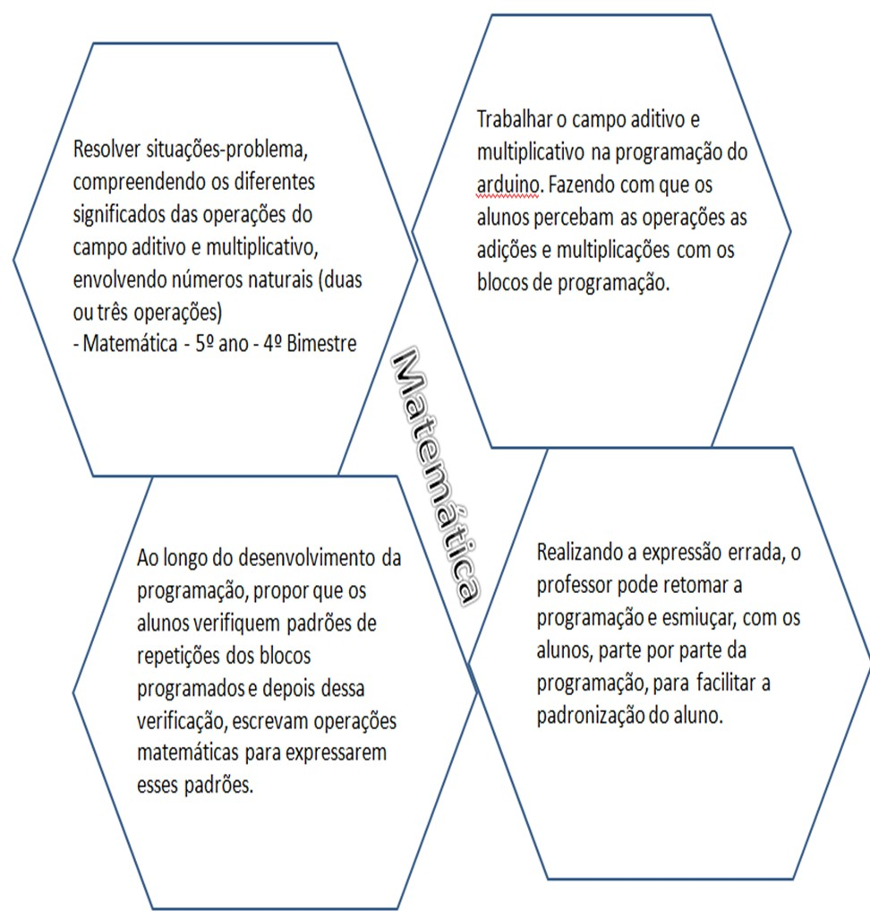

Diario de bordo EAD.
A escola aderiu ao Programa de Ensino Integral para o Ensino Fundamental, anos finais, em 2013. Para 2020,os principais focos da escola para 2020, período de Educação à Distância e fase de isolamento social devido à pandemia do Novo Coronavírus, são: promover total proximidade entre escola e família e o engajamento total dos alunos nas atividades remotas e aulas on line oferecidas pela escola, assim como total engajamento dos alunos nas aulas oferecidas pelo Centro de Mídias oferecidas pela Secretaria da Educação. Além disso, é nosso objetivo o avanço gradativo dos níveis de proficiência de todos os alunos em todas as disciplinas. A expectativa da Equipe Escolar está pautada na qualidade da aprendizagem e busca da Excelência Acadêmica, no cumprimento das metas estabelecidas em nosso Plano de Ação e no apoio permanente ao desenvolvimento dos Projetos de Vida dos nossos alunos. A equipe docente aprofunda, enriquece e amplia os conteúdos da Base Nacional Comum, simultaneamente com as disciplinas da Parte Diversificada e com a disciplina de Tecnologia que estão presentes na matriz curricular, através da busca ativa pela participação dos estudantes nas atividades remotas com ações efetivas de contato virtual permanente com os alunos, aulas virtuais para esclarecimento de dúvidas, tutoria e recuperação de habilidades em defasagem. A formação dos estudantes é pautada nos Valores, Princípios e Premissas do Programa de Ensino Integral, alicerçada nos 4 Pilares da educação e almeja o desenvolvimento de jovens autônomos, solidários e competentes. Imagem do logotipo no paragrafo abaixo:

Imagem do brasão no paragrafo abaixo:

Imagem do Favo de Colméia no paragrafo abaixo:

Matemática como estatística em Geografia:
Explanação sobre as habilidades:
Explanação sobre habilidades II: